01 · 炭 / SUMI
叩くと金属の音がする炭
紀州備長炭は千度を超えても煙がほとんど出ません。皮を一気に焼き締め、中はしっとり。
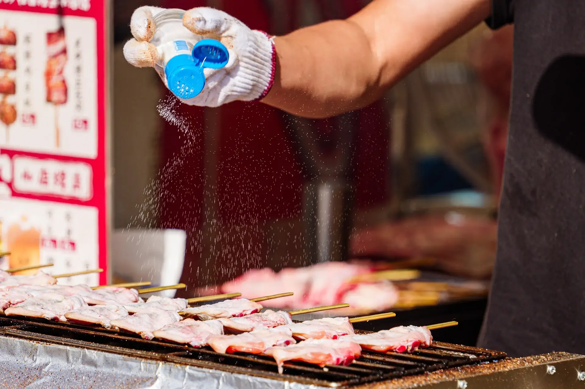
Since 2019 · Setagaya
私たちがやるのは、ひとつだけ。注文を受けてから、白炭で鶏を焼くこと。コースは希望の方だけ、時間制限なし。日本酒に迷ったら、いつでも声をかけてください。


紀州備長炭は千度を超えても煙がほとんど出ません。皮を一気に焼き締め、中はしっとり。
炭が落ち着くまで二時間、焼き台が整ってから店を開けます。塩かタレか、どちらか一つ。今夜の部位にどちらが合うか、遠慮なく聞いてください。
カウンターなら、炭から離れて十秒であなたの皿へ。
今夜の串

もも肉と東京ねぎ。最初の一本に。
¥280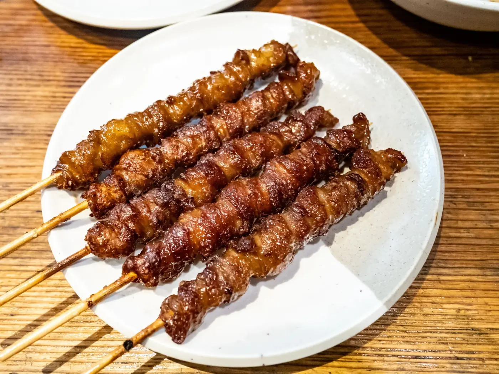
きつく巻いて三度焼き。パリッと音がするまで。
¥240
よく動く首の肉。塩だけで。
¥320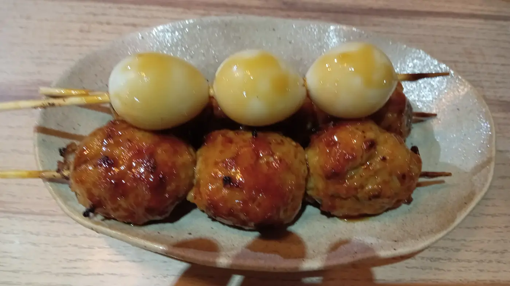
軟骨入りでコリッと。卵黄につけて。
¥380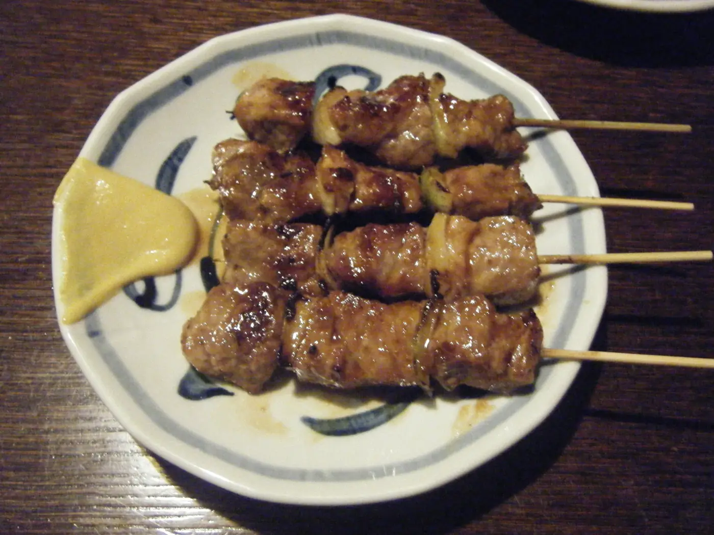
一本だけの豚串。北海道流にからしで。
¥300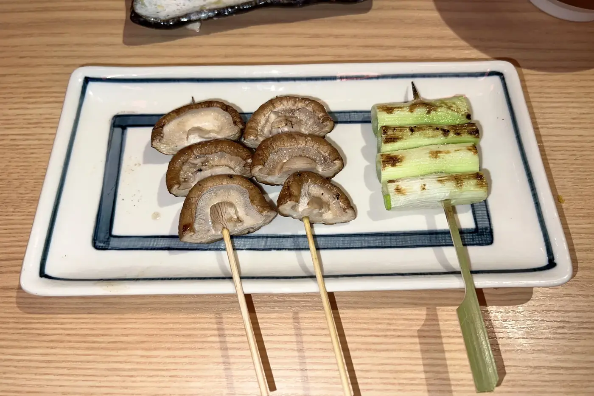
群馬の肉厚しいたけ。かさに醤油を一滴。
¥260焼き台にまかせて。初めての方に。
¥2,400手羽、レバー、ハツ、ぼんじり、季節の野菜。
お品書き全部路地のこと
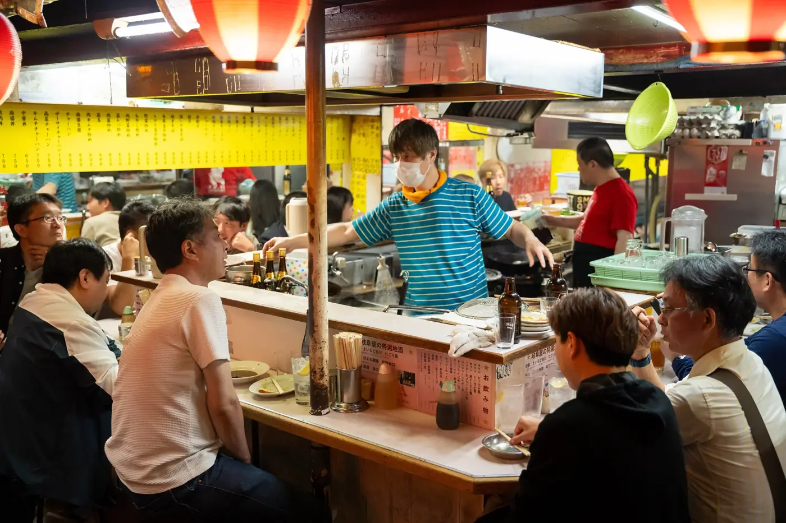
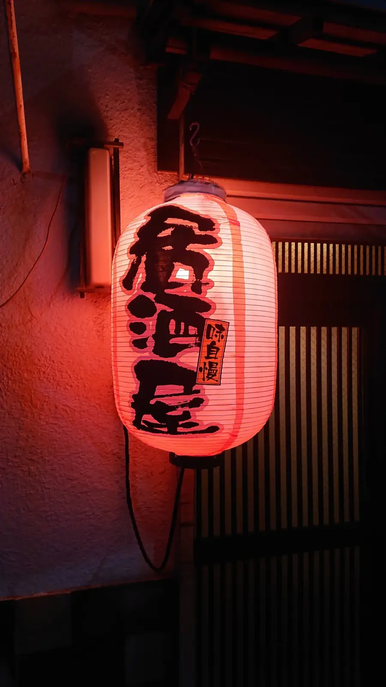
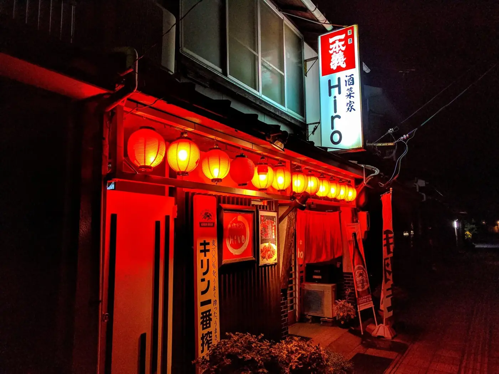
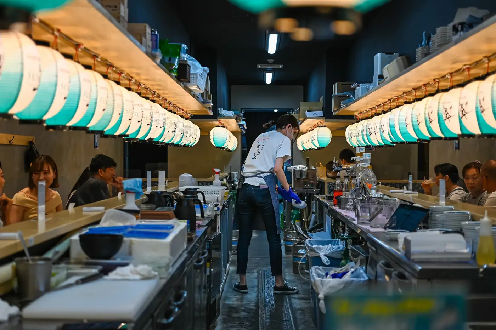
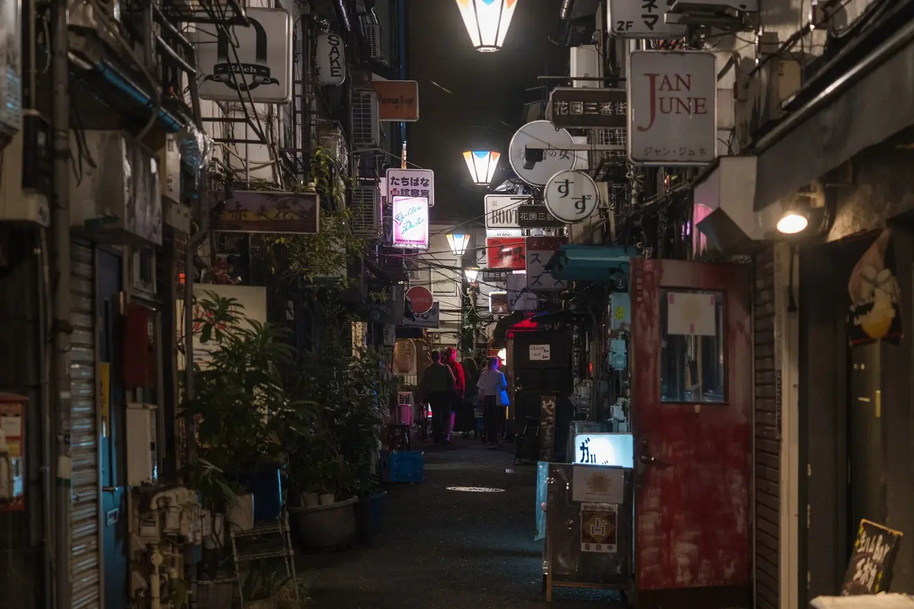

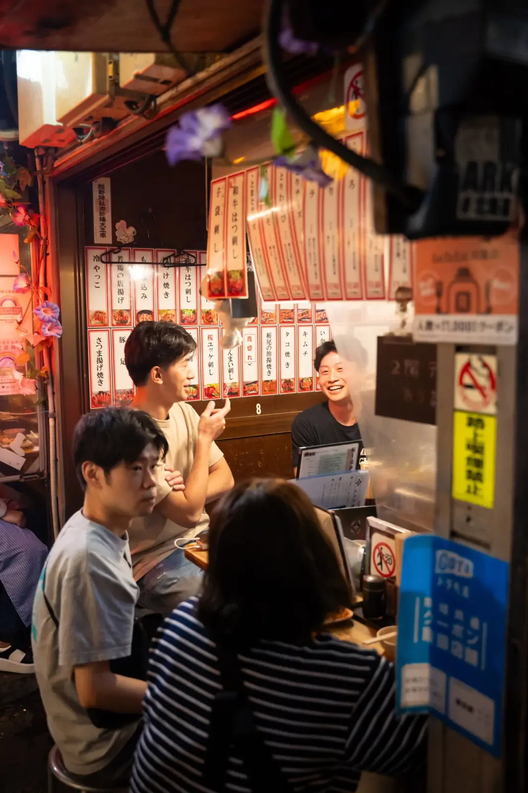
「タレは店より古い。
足すだけで、捨てない。」
店主、焼き台の横のつぼについて

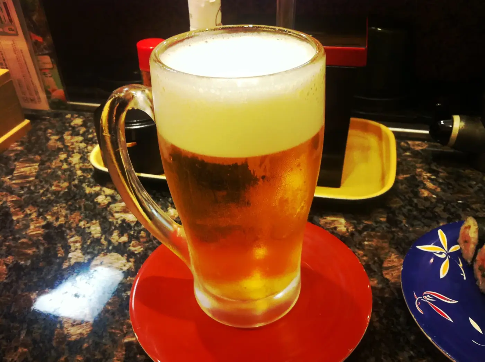

飲みもの
ご来店
ふらっとどうぞ。ただ金曜は十九時に満席になります。予約なら十五分過ぎまで席をお取りします。